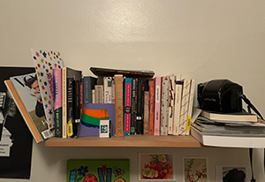

Hi there, welcome! My name is Hayden and I've loved reading for as long as I can remember. While I am by no means an expert on literature, I am very dedicated to my GoodReads account and care more about the contents of my bookshelf than anything else in the world. I think that the most important things that I've learned in life have come from books, specifically female characters who I can relate to and admire.
I wanted to create this website in order to highlight some of my favorite authors who have written some incredible leading ladies. The two pages are divided into classics and some more modern picks, and I'll share my thoughts on each book, a brief summary, and the cultural significance of each author and main character.
Take a look around and thank you so much for stopping by!